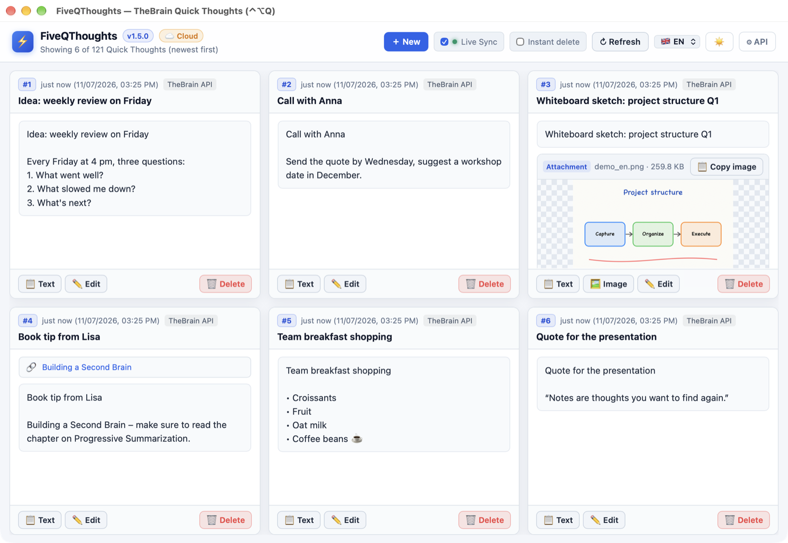
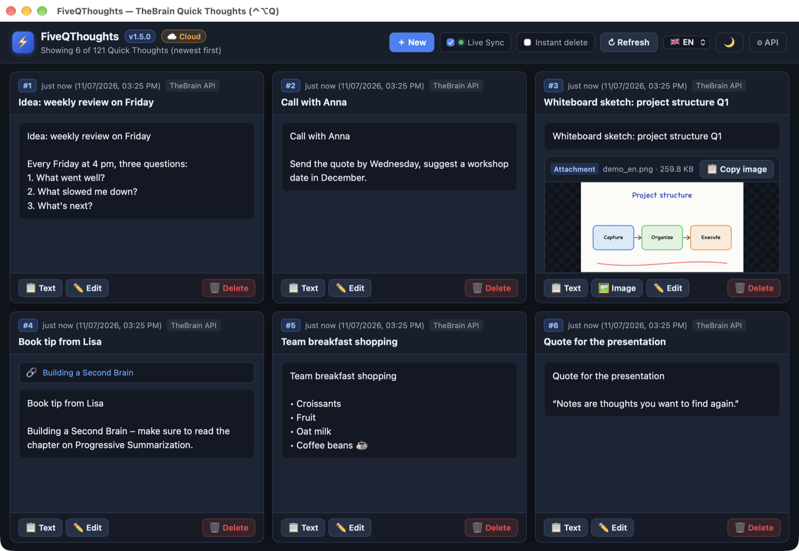
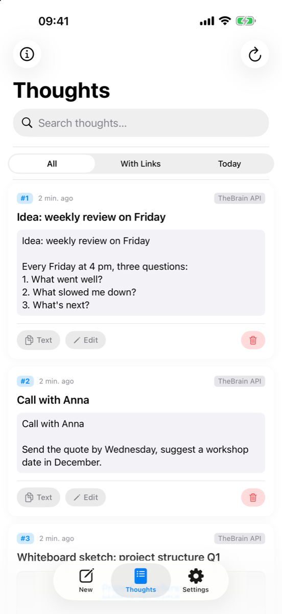
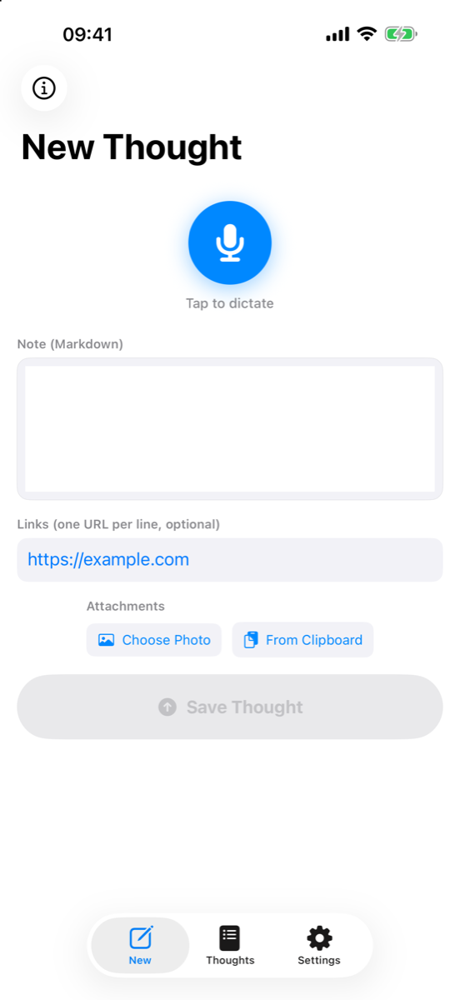
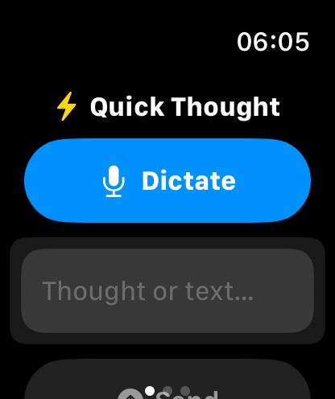
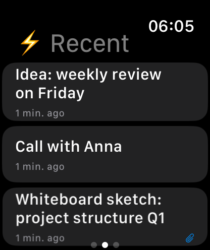

Your Quick Thoughts.
Always at hand.
FiveQ shows your latest Quick Thoughts from TheBrain at a glance – and captures new ones in seconds: on your Mac or PC, on your iPhone or by dictation on your Apple Watch.

Features
Made for a quick glance in between – and for capturing ideas fast.
Latest at a glance
The 5 (or up to 20) newest Quick Thoughts as equally sized tiles – always up to date thanks to Live Sync.
Capture in a flash
New thought with the N key, with text, links and images straight from the clipboard.
Dictation
On iPhone and Apple Watch, just start talking – the thought goes straight into TheBrain.
One-click copy
Copy the text or image of a Quick Thought to the clipboard.
Edit & tidy up
Change Quick Thoughts, add or remove attachments and delete what's done.
Global shortcut
⌃⌥Q (Mac) or Ctrl+Alt+Q (Windows) brings the window to the front from any app.
Local or cloud
Uses the local TheBrain desktop API and switches to TheBrain Cloud automatically when TheBrain isn't running.
Easy setup
Enter your API key once on the desktop and transfer it to iPhone and Watch via QR code or Handoff.
Platforms
One idea, four screens.
🖥️ Mac
- Native app with Dock icon and menu bar item ⚡5Q
- Global shortcut ⌃⌥Q
- Copy images to the clipboard as real pictures
- Light, dark or following the system

🪟 Windows
- Standalone app with tray icon
- Global shortcut Ctrl+Alt+Q
- Installer without admin rights, optionally start with Windows
- No Python required – everything is included
📱 iPhone
- Dictate or type thoughts, attach photos
- List with search and filters (with links, today)
- Edit, copy, delete
- Transfers the API key to your Apple Watch


⌚ Apple Watch
- Dictate thoughts right on your wrist
- Haptic confirmation when saved
- See the 5 newest Quick Thoughts
- Complication for your watch face


Installation
You need a TheBrain account. The mobile apps use a cloud API key; the desktop app can use either the local or the cloud key.
🔑 Get an API key
- Cloud key (for iPhone, Watch and desktop fallback): create one at app.thebrain.com/api-keys.
- Local key (optional, desktop): in TheBrain under Settings → User → Local API.
🪟 Windows
- Download and run
FiveQThoughts-Setup-x.y.z.exe(no admin rights needed). - Start the app, click ⚙ API and enter your key.
- Press Ctrl+Alt+Q anytime to show or hide it.
Requires the Microsoft Edge WebView2 Runtime – already included in Windows 11.
Download🖥️ Mac
- Download and unzip FiveQThoughts.
- Open
FiveQThoughts.app– the native app is set up on first launch. - Click ⚙ API and enter your key. Shortcut: ⌃⌥Q.
Requires Python 3.9+ (e.g. via the Xcode Command Line Tools).
Download📱 iPhone & ⌚ Apple Watch
- Get FiveQ from the App Store – the Watch app is installed automatically.
- Enter your cloud key in Settings – or scan the QR code shown on the desktop under ⚙ API.
- The key is transferred to your Apple Watch automatically.
Support
FiveQ is a free side project. If you like it, I'd be happy about a coffee ☕ or a star on GitHub.